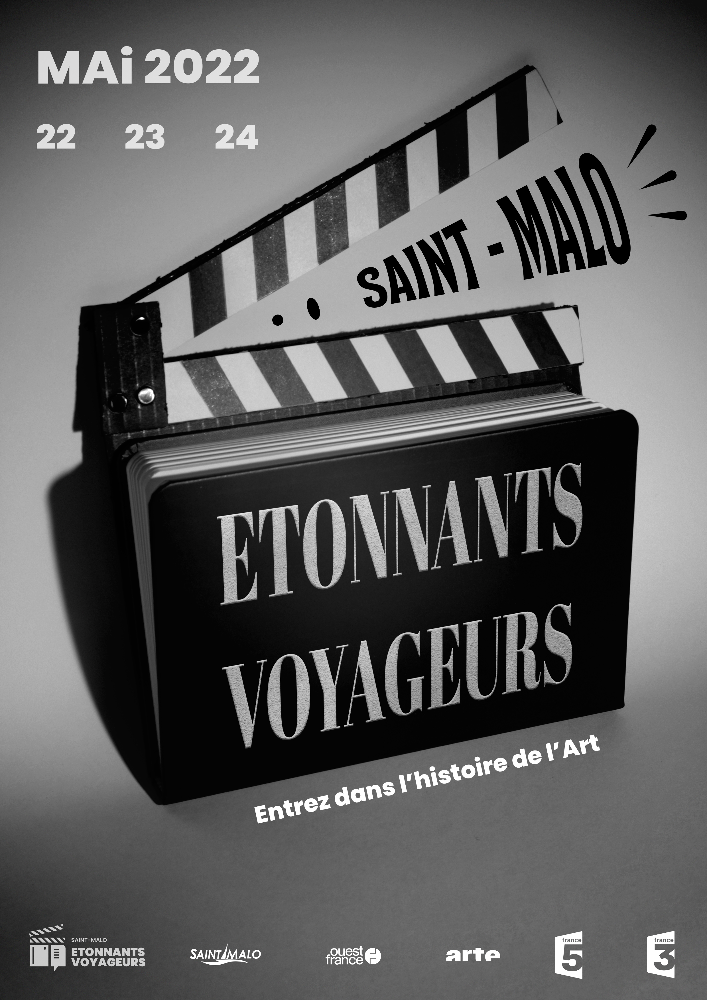
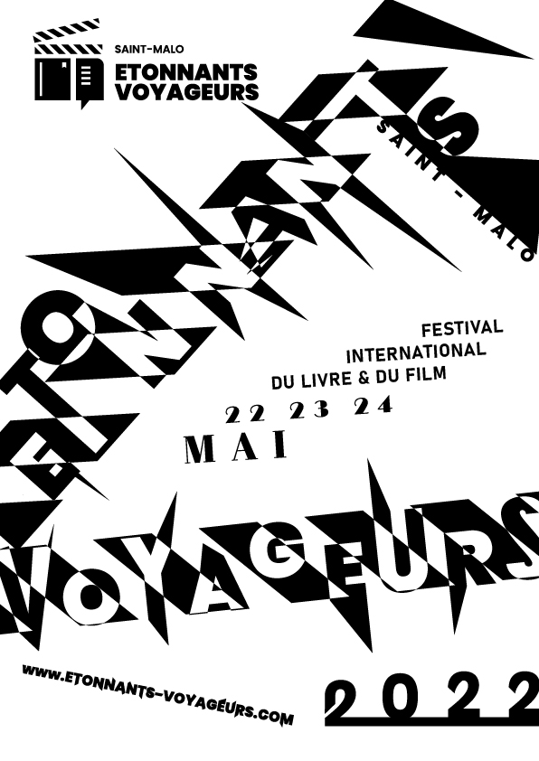
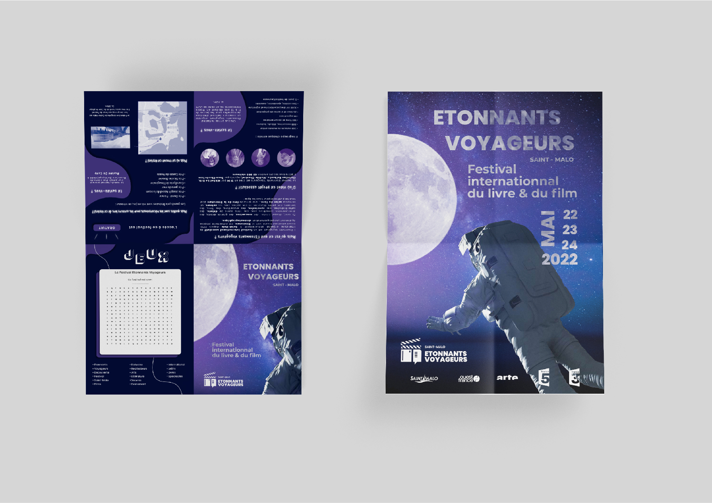

Dans le cadre de mes études en BUT MMI, j'ai réalisé un travail de graphisme : Créer un logo pour
le festival Etonnants Voyageurs. Cet évènement est
un festival du livre et du film à Saint-Malo.
Voila pourquoi j'ai décidé de faire un logo à base de
pictogramme, pour ces formes
compréhensibles destiné à tous publique mais aussi simple et épuré.
On retrouve 3 formes différentes : un clap de
cinéma, un livre et une bulle de
discussion. Pour représenter le festival mais aussi l'échange, la discussion, et le partage
via la bulle.
Affiche photographique

Pour continuer dans ce projet, j'ai du réaliser plusieurs affiches, notamment une en mode
photgraphique. On devait annoncer un événement avec une photo utilisant la mise en scène
d’un objet et une métaphore. Pour l'affiche, j'ai choisi de la rendre en noir et blanc
pour
rappeler l'aire des premiers cinémas. On retrouve le clap de cinéma, ainsi que le livre du
logo en grandeur nature. J'ai réalisé le clap en
carton avec de la peinture pour les
couleurs. J'ai ensuite posé le livret dessus pour donner l'impression que ce carnet est
devenu le clap de cinéma. Le livre devient l'acteur de
l'affiche. On y retrouve les dates, le
lieu, le titre, le logo et ses partenaires et enfin le slogan. Le slogan "Entrez dans
l'histoire de l'art" veut donner l'impression aux spectateurs de rentrer dans
le livre.
Le mot "art" veut reprendre l'idée de l'art numéro 5
qui représente la littérature et l'art numéro
7 qui représente lui, le cinéma. Pour donner une
petite touche de dynamisme, j'ai rajouté
des traits de vitesse au "Saint-Malo", comme s'il sortait du clap avec une forme de
haut-parleur. La typographie sur le livre avec le titre est différente, j'ai utilisé une
typographie fine avec empattement pour donner un aspect luxueux sur le livre, et donc pour
lui donner une grande importance.
Affiche Typographique

L’affiche reprend un style spécial, il donne un aspect de curiosité, on se demande ce qu'est le festival étonnants
voyageurs. Il y a toutes les informations par rapports au festival, elles se retrouvent au
centre de l’affiche. L’effet lettre noir et
blanc reprend le style du clap avec les rayures
blanches et noires. Les pics que l’on
retrouvent sur l’affiche représentent une dispersion de lettre qui donne un aspect
d’oppression.
Brochure publicitaire

Nous devions aussi créer une brochure publicitaire pour l'évènement. Elle reprend
l’aspect voyage et découverte, comme l’a fait le
festival de l’Etonnants
voyageurs, sur des anciennes affiches à leur éffigie. Tels que la mongolfière ou un
personnage qui gravit une tour. Pour le contenu de l’affiche, j’ai utilisé un astronaute
comme voyageur de l’espace. Pour le contenu de la
brochure, sur la page de présentation, j’ai
repris l’affiche très zoomée, pour donner un effet de curiosité. Pour les deux pages qui
suivre, elle présente le festival. Puis à la fin, on retrouve une page de divertissement. La
brochure reprends un style rétrofuturiste, elle
reprend les idées de voyage et découverte
(comme la découverte de la lune par Neil Armstrong).